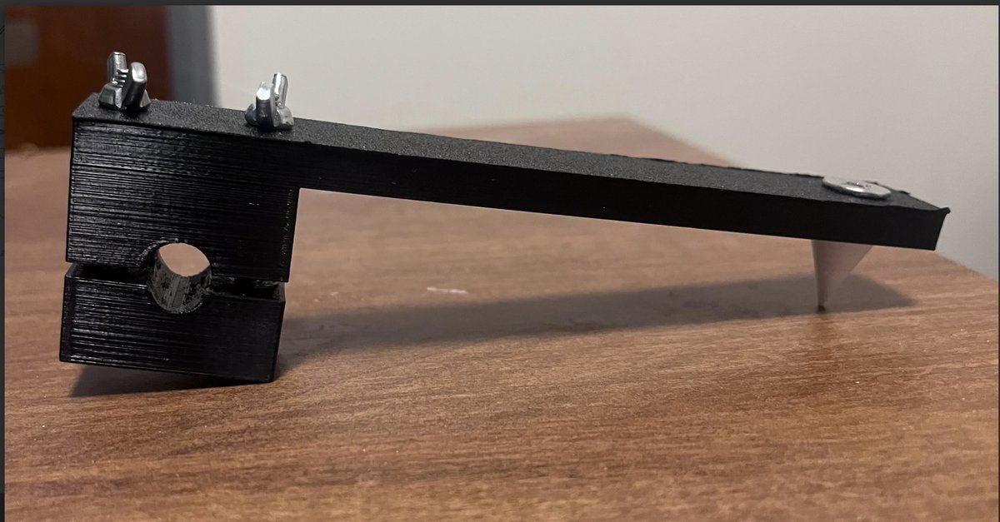
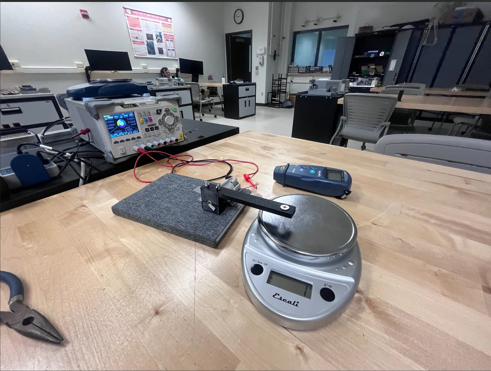
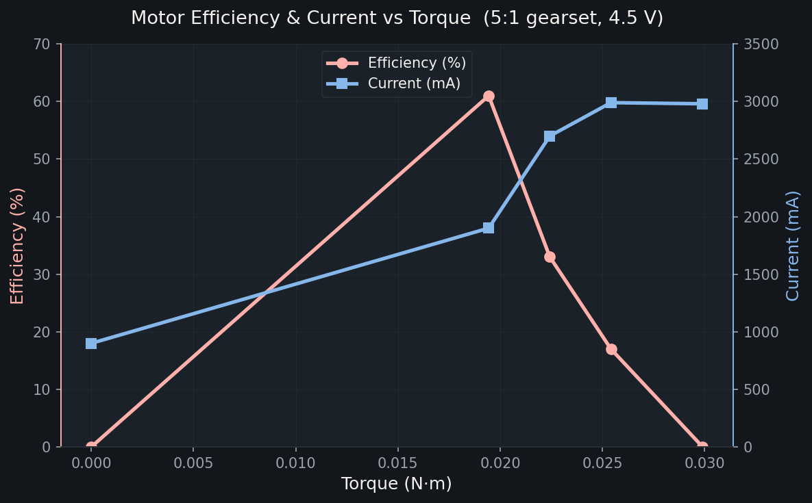

Dynamometer
A test rig my team built to measure the torque, speed, and efficiency of a small electric motor, then prove the numbers by running every setup three times.



What I did
My team designed and built a dynamometer to measure how efficiently a small electric motor with a planetary gearset performs. We started from requirements and a $30 budget, sketched several concepts, and used a decision matrix to pick the best one: a prony brake. Two brackets clamp the motor's axle, and as they tighten, friction pushes an arm down onto a scale, so torque is just the force on the scale times the length of the arm. I helped with the design process, the troubleshooting, and the data collection.
How I tested it
We drove the motor with a programmable power supply, measured RPM with a tachometer off reflective tape on the shaft, and read the force off a scale. We collected data across two gear ratios, two voltages, and load levels from no-load all the way to stall, running three trials per setup so the numbers were consistent. From there we calculated efficiency, power in from voltage and current, power out from torque and angular velocity, and plotted how efficiency, current, and speed changed with torque.
What I took from it
The biggest thing I learned was to always question data jumps and inconsistencies. A couple of times the data came out differently than expected, so I redid the process and got the correct measurements the second time. Our setup had places where human error could creep in, so I kept that in mind on every test to keep our results as accurate as they could be.
← All projects